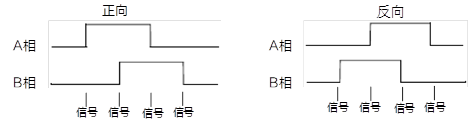

线阵相机开启行触发时，设置编码器信号源进行触发。
选择编码器。
设置编码器A源，可选线路0/1/3、CC1/2/3/4、N/A。
设置编码器B源，可选线路0/1/3、CC1/2/3/4、N/A。
编码器A源和B源推荐选择不同的信号源，若选同一触发源，则轴编码器不输出信号。
设置编码器信号源的触发方向，可选任意方向、仅正方向和仅反方向。

图 1 相机处理逻辑设置编码器信号源的计数方向，可选忽略方向、遵循方向和反方向。
实时显示编码器计数器触发信号的次数。
设置编码器计数器触发信号计数的最大值。
当计数过程中，编码器计数器显示的数值达到设置的最大值，则接收下个有效信号时该参数自动清零，重新开始计数。也可通过编码器计数器复位参数手动清零编码器计数器的数值。
编码器计数器数值重置。执行编码器计数器复位后，编码器计数器数值为“0”。
设置的数值为可允许不出图的最大反向运动次数，相机直到被测物正向运动回到起始位置才继续输出图像。
编码器反向计数器数值重置。执行编码器反向计数器重置后，编码器反向计数器数值为“0”。